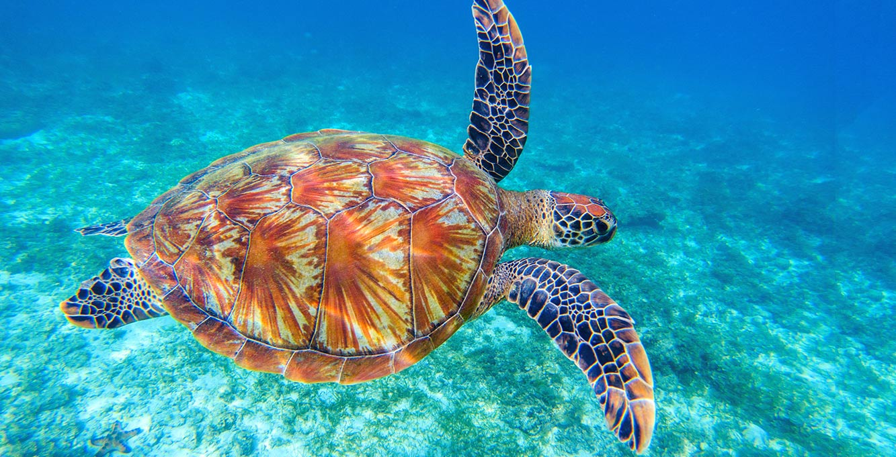
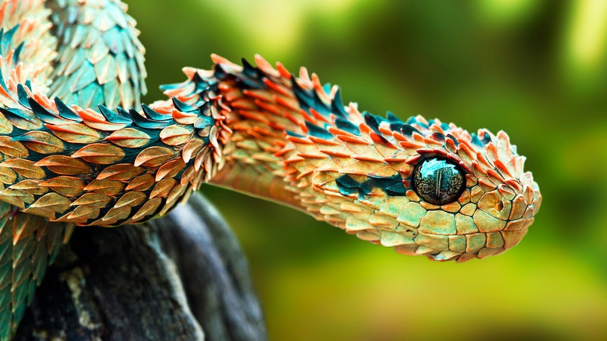
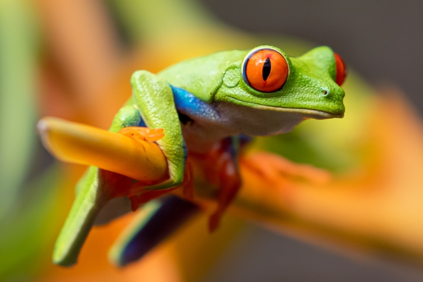

Welcome to our Animal Wiki. The purpose of this page is to showcase some of our favorite reptiles and amphibians, and to teach you a little bit about each of these amazing creatures.
Turtles are reptiles of the order Chelonia /kɪˈloʊniə/ or Testudines /tɛˈstjuːdɪniːz/. They are characterized by a special bony or cartilaginous shell developed from their ribs that acts as a shield. Colloquially, the word "turtle" is generally restricted to fresh-water and sea-dwelling Testudines. Testudines includes both extant (living) and extinct species. Its earliest known members date from the Middle Jurassic. Turtles are one of the oldest reptile groups, more ancient than snakes or crocodilians. Of the 360 known extant species, some are highly endangered.
Turtles are ectotherms—commonly called cold-blooded—meaning that their internal temperature varies according to the ambient environment. However, because of their high metabolic rate, leatherback sea turtles have a body temperature that is noticeably higher than that of the surrounding water. Turtles are classified as amniotes, along with other reptiles, birds, and mammals. Like other amniotes, turtles breathe air and do not lay eggs underwater, although many species live in or around water.
Snakes are elongated, legless, carnivorous reptiles of the suborder Serpentes /sɜːrˈpɛntiːz/.
Like all other squamates, snakes are ectothermic, amniote vertebrates covered in overlapping scales. Many species of snakes have skulls with several more joints than their lizard ancestors, enabling them to swallow prey much larger than their heads with their highly mobile jaws. To accommodate their narrow bodies, snakes' paired organs (such as kidneys) appear one in front of the other instead of side by side, and most have only one functional lung.
A frog is any member of a diverse and largely carnivorous group of short-bodied, tailless amphibians composing the order Anura (literally without tail in Ancient Greek).
The oldest fossil "proto-frog" appeared in the early Triassic of Madagascar, but molecular clock dating suggests their origins may extend further back to the Permian, 265 million years ago. Frogs are widely distributed, ranging from the tropics to subarctic regions, but the greatest concentration of species diversity is in tropical rainforest. There are about 7,300 recorded species, which account for around 88% of extant amphibian species.[1] They are also one of the five most diverse vertebrate orders. Warty frog species tend to be called toads, but the distinction between frogs and toads is informal, not from taxonomy or evolutionary history. All toads are frogs, but not all frogs are toads.
